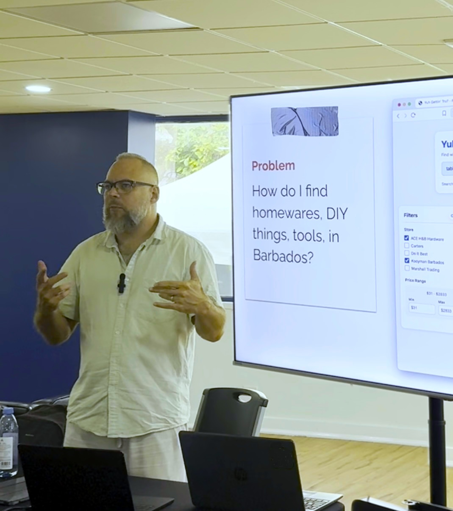
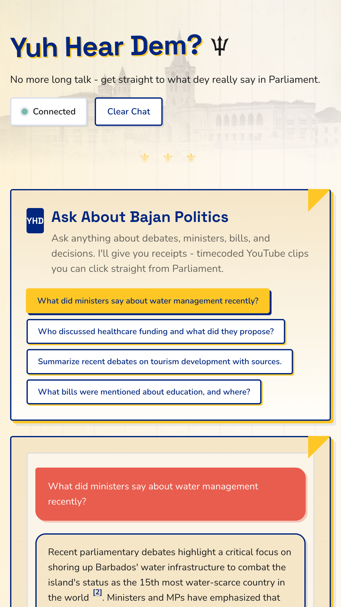
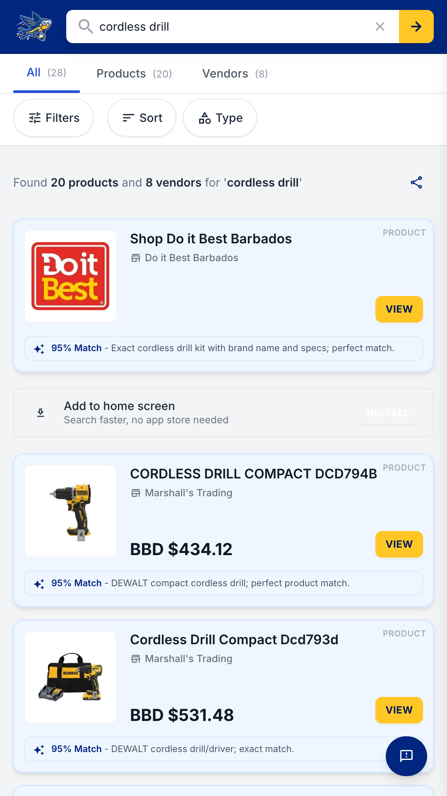
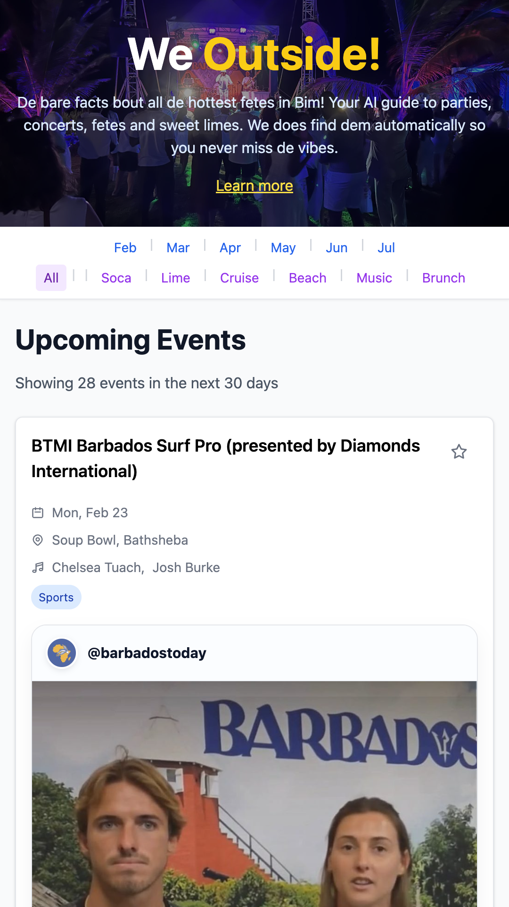
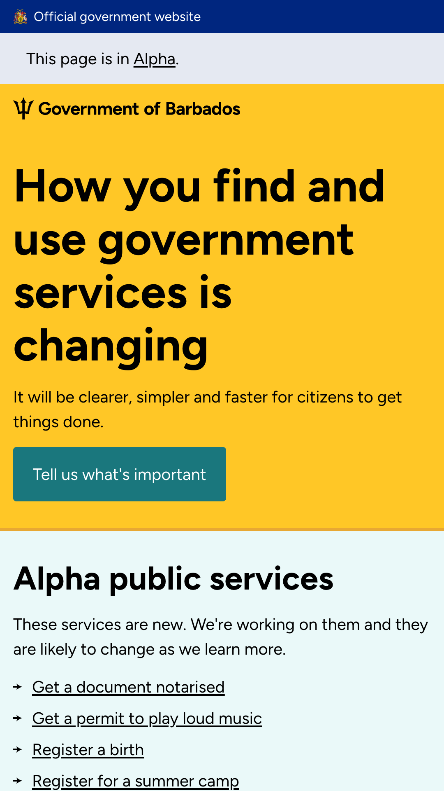

Small islands solve problems the rest of the world is still debating. Instead of importing Silicon Valley tech-bro abstractions, I build and prove national-scale AI systems in Barbados, creating live blueprints ready to solve real, everyday frictions across the wider region.

Every project below is in production, serving real users, processing real data, and proving that small islands can lead on civic technology.

AI-powered parliamentary search with source-linked provenance. Every claim links back to the original video evidence.

Island-wide product search across 100+ retailers. Vector search + LLM reranking to find what you need locally.

Cultural events discovery for Barbados. Automated daily feed refresh with auto-categorisation from social signals.
A shame-free WhatsApp-based task manager for ADHD. Context-aware planning that adapts to energy levels without guilt mechanics.

Government services as a service you can actually use. An alpha-stage portal designed to test ideas early and iterate with citizen feedback.
I'm available for civic-tech builds, AI products, and advisory work across the Caribbean.
Barbados has 280,000 people, one parliament, one set of border controls, and the ability to deploy end-to-end nationally. When I build a system here, whether it's making parliamentary debates searchable or improving how citizens find services, it doesn't sit in a pilot programme. It goes live, nationally, and serves everyone.
That's the advantage of small islands: you can prototype at national scale. The feedback loop is immediate, the stakes are real, and the results are measurable. There's no "phase two". There's just shipped software doing its job.
But this isn't only a Barbados story. The Caribbean is a network of small, connected nations facing shared challenges: climate resilience, transparent governance, economic diversification. What works in Barbados can travel to Trinidad, Jamaica, the Eastern Caribbean, and beyond. Small islands aren't edge cases. They're proving grounds.
I'm a technologist, founder, and developer advocate focused on the intersection of AI, blockchain, and community impact. Across roles at places like IBM, Ripple, Protocol Labs, and the Arbitrum Foundation, I've spent years as the voice of the developer, shaping tools and experiences that help builders ship.
I'm based in Barbados (moved from the UK in August 2021 via the Welcome Stamp programme), where I'm applying that same build-and-iterate mindset to public-facing systems. I was part of the launch team for the Barbados Government's alpha.gov.bb portal, working to make government services clearer and faster for the public.
In 2025 I received the Innovation Award at the Barbados Labour Party Awards for work using emerging tech to increase transparency and improve daily life on the island, including Yuh Hear Dem (making parliamentary records searchable), We Outside 246 (events discovery), and Yuh Gettin' Tru? (island-wide shopping search).